第十章：Theta 与次要希腊字母（Theta and Minor Greeks）
一个世纪前，年轻的法国数学家 Bachelier 在博士论文里写下：一个 call 明天的期望价格等于它今天的价格。 —— 这正是多数期权初学者没弄懂的事：时间衰减不是期权的期望盈亏。
导读：本章要解决的问题
第七到九章依次拆穿了 delta、gamma、vega 三个一阶/二阶敏感度。本章收尾剩下的希腊字母：主角 theta（时间衰减），以及一组被 Taleb 称为"次要"的 rho、omega、alpha、convexity，外加障碍期权用的 stealth/health。这些量在教科书里往往一笔带过，但 Taleb 要传达的恰恰相反：所谓"次要"风险只是在多数时候次要，它们随工具、随市场状态会翻成主要，而且每一个都和已经学过的 gamma/vega 用精确的等式绑在一起。
开篇引 Bachelier 1900 年的洞见定下全章最该记住的一点：**时间衰减不是期权的期望盈亏。**如果期权按正确的波动率定价（利率为零），theta 的期望恰好为零，它是 gamma 收益的镜像。把全章压成几条主线：
- theta 是"租金"，它和 gamma 通过 锁死，alpha（theta/gamma 比）才是衡量"租金质量"的真正指标。
- 裸 theta 是一个路径无关、且假设其他参数不动的量，必须升级成 shadow theta（计入市场不动时波动率下降）。
- rho 是被误解最深的希腊字母，因为它假设收益率曲线平行移动；要拆成 rhop/rho1/rho2 并做加权。
- omega（期权久期）用"Rho fudge"速算美式/障碍期权的预期寿命，背后是最优停时。
- convexity 是动态对冲者无处不在的伴随物，但裸 convexity 假设平行移动、等波动，必须按相对波动率做 modified convexity。
对我们这类读者，本章的理论价值在几处映射： 直接来自 BSM 的 PDE（利率为零时）；alpha 与到期无关，戳破"卖短期权收租更划算"的幻觉；modified rho/convexity 的加权又是期限结构的主成分思想；omega 的 Rho fudge 把"美式期权 = 写在利率上的复合期权"量化成一个久期比；Eurodollar 的 boost 则把第一章"期货-远期凸性来自融资相关性"兑现成一张现金流表。笔记沿原文小节顺序展开，并在每个节点把这层映射写出来。
一、Theta 与 Modified Theta
theta 是期权组合因时间流逝而损失的时间价值，交易员把它叫租金（rent）。有些交易员从不愿意"付着 theta 过夜"，许多前期权交易员落下了时间衰减恐惧症。定价很直接：取期权今天的价格与明天的价格之差（其余一切不变）。
Taleb 立刻点出 theta 和 gamma 是同进退的：**alpha（gamma per theta 比值）无论距到期多少天都相同。**所以卖很短期的期权（新手周期性地热衷此道）看似是个诱人的赚钱营生，但风险其实和卖长期权完全一样，除非交易员卖的是一个贵的 strike。这一句是本章最反直觉的实务结论，后面 alpha 那节会用 给出严格证明。
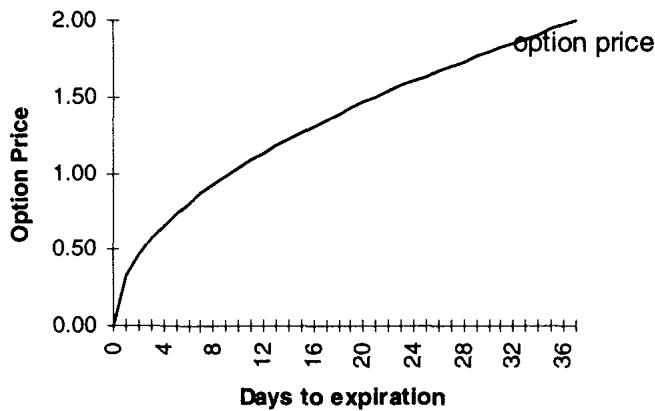
图 10.1 是平值期权的时间衰减，临到期时加速下行（theta 绝对值随 增大）。
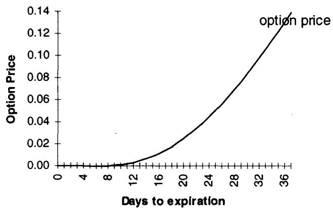
图 10.2 是虚值期权的时间衰减，形态与平值不同，衰减更平缓、更早开始趋零。
Modifying the Theta：明天的波动率未必等于今天
裸 theta 是"把组合用少一天到期重新定价、看两个价格之差"。但如果 期的波动率和其他参数与 期不同呢？
Taleb 的例子：30 天期权交易在 16%，29 天期权交易在 15.8%。交易员该假设手里这个 30 天期权明天（剩 29 天）会"收敛"到 15.8% 波动率，还是该假设明天的 29 天隐含波动率仍是 16%？这取决于一个根本问题：**远期波动率究竟是未来波动率的预测，还是波动率曲线出于结构性原因而存在？**如果你相信波动率期限结构反映未来波动率、曲线里嵌着有价值的信息，就没有理由修正 theta。但很多情况下修正是合理的：有时关于某个会议的信息让曲线在事件后几天定价更高波动率，曲线的预测力无可辩驳；多数时候，曲线之所以存在只是因为人们相信波动率均值回复，这时 theta 的修正应当完全主观、交由交易员裁量。
modified theta 是"用当前波动率定价的今天期权"减去"用少一天到期的期权波动率定价的明天期权"。
它通常用 时间法插值，以计入波动率曲线上可能的下滑。这与第九章 权重同源：若波动率均值回复，少一天到期对应曲线上一个略低（或略高）的点，theta 要把这个"沿曲线下滑"算进去。
Theta for a Bet
当市场逼近障碍时，theta 可能大到压倒一切（第 17、18 章）。这里先埋一个伏笔：数字期权和障碍期权在障碍附近的时间衰减是爆炸式的，因为支付点的概率测度随时间剧烈收窄。
Theta、利息 carry 与自融资策略
这是一处重要的约定，关乎我们怎么读全书的 theta 数字。交易员计算 theta 时会剔除持有权利金的利息成本，因为对一个自己融资的交易员，期权的 carry 应当是中性的。换句话说，如果利率是 20%，theta 会因现值效应低 20% 的权利金（期权价格更低），但持有期权的 carry 成本恰好抵消这份节省。假设交易员借钱买期权、并支付更高利息的差额，两者相消。
本书的 theta 不含权利金成本。许多交易员错误地把权利金成本算进 theta。
从自融资策略推导期权价值时，期权卖方被假设买入一个生息工具，等价于期权交易员向自己公司融资：负余额付息、正余额收息。更有争议的是远期问题：当交易员把组合往前推一天重估时，要不要把现货推到远期（因为期望现货就是远期价）？很多交易员不这么做，因为影响很小；但在现货-期货线很陡的市场，这个差别相当大。最好用交易员自己的预期处理：如果他觉得远期里嵌的预期是错的，就要带着这个信念去分析 delta。资产 在 0 期对 期的期望是
这一点在第 12 章详述。这个约定对我们很关键：它把 theta 净化成纯粹的时间价值衰减，剔除了利率/carry 这层会污染 gamma-theta 关系的因素，正是后面 alpha 能成立的前提。
二、Shadow Theta：市场不动时波动率会掉
theta 的损失通常比预测的更糟，权利金买家成为额外盯市损失的受害者。原因常常是：平静市场造成的 theta 损失，被"平静市场伴随的隐含波动率下降"造成的损失叠加放大（市场停止移动时，对未来移动的预期下降）。这不总是适用于所有结构，要用恰当的谨慎和主观判断来度量。一个政治公告或再融资会议前的平静市场，可能导致"反向衰减（reverse decay）"的情形；有时期权价格被严重低估，平静期的预测已经被定价进去了。
Taleb 的例子：30 天期权交易在 16% 波动率。可以设想，7 天后如果什么都没发生，那个 23 天期权会定价在 14%。shadow theta 就是常规 theta 加上预期波动率下降的价格影响。
theta 单独看几乎没有意义。它理论上假设除时间外什么都不动（波动率和资产价格恒定）。但交易员可能掌握信息：现货不动时波动率会怎样，以及现货移动时波动率会怎样。市场移动时 theta 会变得低得多，这和 shadow gamma 的推理一样，同样依赖对隐含波动率在某组条件下行为的完全主观的感知。
如果交易员相信市场保持冻结时波动率可能下降，这个信息需要被计入时间衰减。
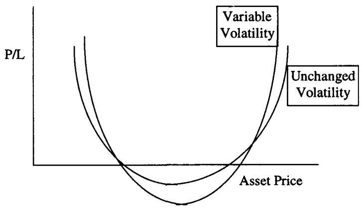
图 10.3 用两条曲线展示这个现象，都给出未来某点的盈亏。"波动率不变"那条是常规 theta；"波动率可变"那条是 shadow theta，以及 shadow theta 与 shadow gamma 的结合（因为普遍认为市场移动时波动率会变）。Taleb 说他过去尝试度量这个效应，有些成功，它帮助在市场于不同水平间来回拉锯（whipsaw）时确定最优 gamma 对冲、从而更好地捕捉 gamma。更紧的再平衡总能缓解加速的时间衰减。
理论映射：shadow theta 是 theta 的 vega 修正
把 shadow theta 翻译成全导数，和第八章 shadow gamma 完全对称。常规 theta 假设 恒定，只算 。shadow theta 承认波动率随时间（市场不动）下降 ，于是真实的时间衰减是
平静市场里 ，vega 又恒正，所以第二项让 long 期权者的衰减比裸 theta 更狠。这正是"权利金买家的双重打击"：既付时间租金，又吃 vega 缩水。反过来，事件前的平静（reverse decay）对应 （市场预期事件临近、波动率反而往上爬），这时第二项变正，可能抵消甚至盖过裸 theta。这个等式和 、shadow gamma 的 vanna 项一起，构成了第八到十章的统一图景：所有"shadow 希腊字母"都是把某个被假设冻结的参数的联动，通过一个交叉导数项焊回主敏感度里。
Theta 度量的弱点：路径无关
theta 最大的弱点是它是一个**路径无关（path-independent）**的度量。 到 之间没有真正的时间衰减度量能预测"whipsaw"的效应，即市场从原点猛地弹开、又在时间区间内返回原点的那条路径。这种事件理论上不大可能，现实中却相当频繁。对一个 short gamma 的人，whipsaw 是灾难：他在两个方向上各被 gamma 咬一口，而裸 theta 完全看不见这条路径。这呼应了第八章 gamma 必须配价格区间、theta 必须配路径预期的纪律。
三、Rho 与 Modified Rho
rho 是期权头寸对 numeraire 货币利率、以及决定现货/期货关系的那个利率的敏感度。Taleb 直言 rho 是最被误解的期权风险，混乱大多源于它假设曲线平行移动，而平行移动一般只发生在新手风险经理的想象里。rho 要拆成它的分量：rhop、rho1、rho2。
收益率曲线不是市场给出的一条简单连续线。导出曲线的证券对应固定已知的到期，落在中间的"broken dates"必须以某种方式插值。
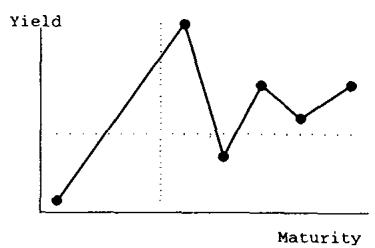
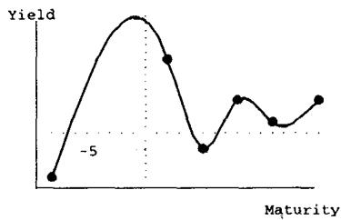
Taleb 讲了插值的两条原则。第一条是消除锯齿（eliminate jaggedness）：直线插值会造成尖锐的局部峰，市场不该在两个日期之间经历这种骤跌（除非中间有信息）。一种平滑方法是三次样条（cubic spline），筑路工程师用它确保道路没有急转弯、不引发事故；用它会得到右图那条更顺眼的曲线。第二条原则是适应市场（adapt to the market）：如果市场恰好用某种不理性的插值技术，交易员定价时必须遵从它，但决策时不必。这条很 Taleb，定价要随大流以免被套利，判断要独立以免被市场的错误带走。货币期权需要货币对两侧的风险中性收益率曲线，股票期权除了 numeraire 货币曲线还需要股息派发曲线（难到股票期权交易员都不愿谈）。
三个分量的定义：
- rhop：与期权权利金融资相关的风险。
- rho1：组合对"计算 P/L 的基准货币利率"的敏感度。美元计价股票期权是 USD 利率，日元计价股票期权是日元利率，货币对里是基准货币（若是 DEM-JPY 这种交叉对，rho1 按初始记账未实现 P/L 的那个货币算）。rhop 包含在 rho1 里。
- rho2：组合对"标的资产风险中性回报率"的敏感度。股票是股息派发，货币是外币利率（counter rate）。
收益率曲线只会偶然地平行移动，它可能经历改变形状的移动。本书关注的是次要收益率曲线风险（risks incidental to the position），而非主要收益率曲线风险，所以可以用更简单的方法算"真实 rho"而不损失太多精度（更复杂的见第 12 章 stacking）。
modified rho 是把任何简单的单因子收益率曲线模型（各到期的相对方差）应用于计算期权账对市场利率的真实敏感度。
简单考察就会发现短端利率往往比长端更易波动。修正 rho 应当计入底层工具的相对波动率及其相关性。和 vega 权重一样，方法从极简到受 HJM 框架启发的都有，而一个简单的相对权重法就能大幅胜过不加权的 rho。简单权重通过测量一个到期相对另一个到期的平均移动得到。需要一个基准（benchmark），即一个流动到期，曲线其余敞口都等价到它，交易员一般用 3 个月，基准的 rho 和 modified rho 相等。
例（简化 modified rho 计算）。第一步把敞口分桶，第二步用更高利率重定价（敞口是利率每升 100bp 的美元变化），基准 3 个月：
| 0-3月 | 3-6月 | 6-9月 | 9-12月 | 12-18月 | 18-24月 | 24-48月 | |
|---|---|---|---|---|---|---|---|
| Rho1（raw） | 100,000 | 300,000 | 400,000 | 600,000 | -750,000 | 420,000 | -1,000,000 |
| 修正权重 | 1.22 | 1.22 | 1 | 0.94 | 0.91 | 0.82 | 0.75 |
| Modified Rho | 120,000 | 366,000 | 400,000 | 564,000 | -682,500 | 344,400 | -750,000 |
总 Rho1（raw）：70,000；总 Rho1（modified）：362,000。差别巨大。
这个例子和第九章的 modified vega 是同一逻辑：**短端权重大于 1、长端小于 1，因为短端利率波动更大。**raw rho 把不同到期的利率敏感度直接相加（隐含假设曲线平行移动、各点等波动），得到 70,000；加权后变成 362,000，相差五倍多。理论上这又是收益率曲线的主成分：raw rho 只测 level 因子，modified rho 用单因子权重近似 level+slope。一个 raw 看着小的头寸，可能在 slope 上巨幅暴露。
四、Omega（期权久期）
omega 是软路径依赖期权的预期寿命。对障碍期权和美式二元结构，它一般叫 first exit（首次退出）或 stopping time（停止时间）。omega 对美式期权和障碍期权概念上不同：障碍是一个事先已知的退出价格，而美式期权不提供预定的行权价格或时间。
美式期权的预期寿命等于或短于同到期欧式期权，障碍期权也是（这些工具可能在到期日前提前终止）。当面对一条陡峭上行或陡峭下行的波动率期限结构时，这个特性尤其有意义。美式期权的行权取决于第一章那两条决策规则：
- 软规则（Soft Rule）：比较"内在价值之上的权利金时间价值"与"权利金再投资于货币市场工具的收益"。若期权权利金到终到期为止融资成本 2 美元，而期权的额外权利金只有 1 美元，提前行权就是最优的。
- 硬规则（Hard Rule）：比较"内在价值之上的权利金"与"持有标的 delta 到到期的成本"。标的头寸可能有负 carry（做空的货币对里，空腿货币利率高于多腿；或股票股息远高于市场融资率）。例如 long USD-MXP（多美元、空墨西哥比索），墨西哥年利率 50%、美国 6%，carry 每年成本 44%。一个深度实值的墨西哥 call 会迫使操作者二选一：卖墨西哥对冲深度实值 call、承担 50% 借币和 6% 借美元的成本；或放弃期权，因为这局不值得玩，放弃未来波动率的潜在收益更划算。
提前行权规则取决于两个可变参数：波动率和 carry。测试"权利金 vs carry"规则时要记住，一旦两者之一变化，最优决策可能反转。当利率波动或曲线斜率陡峭时，需要更复杂的决策方法。一个嵌套二叉（或三叉）树是最佳技术之一，有些操作者诉诸更重的蒙特卡洛。二叉树的强处在于它能通过远期价格及其过程，把未来波动率和利率的信息纳入自身，节点之间的波动率不必恒定。
涉及"局部"波动率的方法有两个层级：基础二叉/三叉树，和随机参数二叉/三叉树。
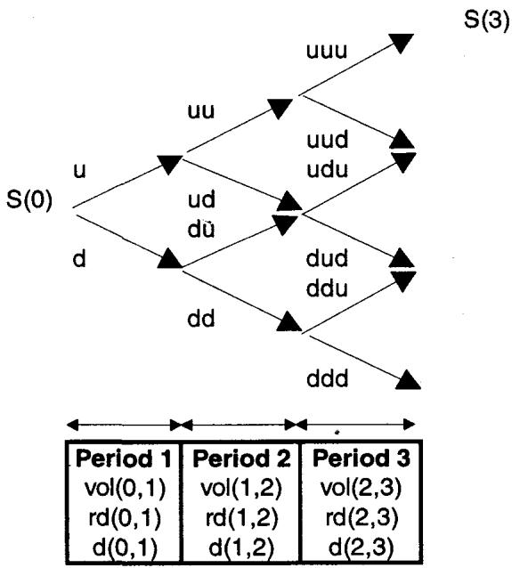
基础二叉树用市场可得信息（远期波动率、远期利率、skew 等）定价节点间的增长。上图显示用的参数是远期波动率和远期利率而非即期：每个状态依赖远期波动率（决定 u、d 移动的绝对大小）和 carry（rd-d 利率差或净融资股息，决定 u/d 的比值）。三叉树更适应 forward-forward 参数的过程，它允许通过中间节点改变波动率（二叉树在试图纳入 smile 时常常不重合）。
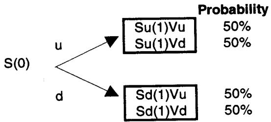
随机参数树在每个节点对波动率和/或利率再加一层分叉，可定义 为上行波动率、并赋予期限结构和每个移动的概率。
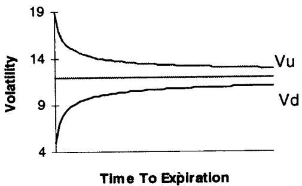
Taleb 在脚注里提到一个交易员的偏好：多数与他讨论过的交易员明显倾向于模拟一个"有偏（skewed）"过程，波动率下降的概率更高、上升的概率更低，但两个状态有相等的期望支付（上行移动更大）。这正是波动率自身的负 skew，对应 biased asset 的行为。
理论映射：Rho fudge 把最优停时压成一个久期比
美式期权需要 0 到到期之间所有可能的信息，封闭解不携带这种信息（BSM 只要求把到期日的市场参数插进去）。Taleb 的速算法是"Rho fudge"，目的是找到美式期权的正确久期（预期终止时间）。知道正确到期就能用正确参数定价、做更好的提前行权测试。它假设期权的预期寿命匹配由它导出的合成利率工具：
用 Rho2（外币利率或股息）而非 Rho1，是因为它剔除了权利金的融资成本。交易员也可以把 delta 当成名义到期的零息债，从 delta 算 Rho2。
例：假设 1 年美式期权等价于欧式（提前行权概率为零），omega 应为 1 年。1 年期权的 Rho2 = delta × 1（外币利率或股息升 100bp，期权价升对应量）：
现在假设结构只按 0.73 反应：
这个方法虽不彻底，却提供了一个速算敲出期权或任何美式二元期权预期寿命的工具。把它放进我们的理论框架：美式期权价值是最优停时问题 ，预期停止时间 难以解析。Rho fudge 的巧思是用对利率的敏感度比值来反推这个寿命：一个工具对利率的敏感度正比于它的久期，所以"美式 Rho2 / 欧式 Rho2"恰好测出美式期权因可能提前终止而缩短的有效久期。这是第一章"美式期权 = 写在利率上的复合期权"那条线的量化兑现：提前行权的可能性把期权的有效久期从名义到期拉短，omega 把这个缩短比直接读出来。
五、Alpha（gamma 租金）
alpha（也叫 gamma rent）是期权头寸的 theta per gamma 比值。它反映 gamma 以"租金"衡量的质量，是"每过夜冒险一美元、gamma 收益质量"的最佳指标。alpha 高意味着权利金持有者没有为时间衰减的成本得到足够补偿；alpha 低意味着交易员为这份 gamma 只冒了很少的 theta。收不到足够权利金来补偿所冒风险的卖方活不长。通常做价差（第 16 章）能改善 alpha（多头要低、空头要高），靠买便宜期权、卖贵期权实现。
更进阶的算法用 modified theta（计入曲线下滑）替代解析 theta：
gamma 离散计算时也更准。推导 alpha 时总是最好算 shadow gamma，以得到风险和回报的完整图景。
理论映射：alpha = ½σ²S²，与到期无关
假设利率为零（或权利金账户最终在交易员现金账上回冲），由 BSM 的 PDE：
于是
**这个量对到期时间不敏感（在常数波动率或平坦波动率期限结构下）。**这是本章戳破新手幻觉的核心结论。多数初学期权交易员（和一些不熟练的老手）以为卖短期权能为所冒风险捕获更多时间衰减，但长期权的 gamma 比前月低，时间衰减也同样低，两者的比值 alpha 一样。只有当波动率水平依赖距到期天数时（如 3 个月波动率低于 6 个月），alpha 才依赖到期，否则相同。
这个推导对我们极干净： 是 BSM PDE 在利率为零时的直接形式（第一章已见），两边除以 就消掉了所有跟期权具体形态、到期相关的项，只剩 。它的交易含义是：**gamma 的"公平租金"只由波动率和现货水平决定，与你卖的是 3 天还是 2 年的期权无关。**卖短期权收的 theta 看起来大，但你扛的 gamma 也大，单位 gamma 的租金一分不多。Taleb 给出公平 alpha 表（表 10.1，利率为零）：
| 波动率 (%) | Alpha | 波动率 (%) | Alpha |
|---|---|---|---|
| 2.0 | 56 | 16.0 | 3596 |
| 4.0 | 225 | 18.0 | 4551 |
| 6.0 | 506 | 20.0 | 5618 |
| 8.0 | 899 | 24.0 | 8086 |
| 10.0 | 1405 | 28.0 | 11002 |
| 12.0 | 2023 | 32.0 | 14363 |
| 14.0 | 2754 | 40.0 | 22416 |
对 short gamma 头寸，alpha 低于公平 alpha；或对 long gamma 头寸，alpha 高于公平 alpha，长期都会导致亏损（由大数定律）。
表 10.1 显示 10% 波动率下，一份 gamma 无论到期都该值 1,405。
例：组合的 alpha 可能给出意外结果。一个日历价差里，1 个月交易在 11% 年化波动率、3 个月在 12%。交易员买 1 亿美元 1 个月平值 call（11 vol）：共 13.5 个正 gamma，每天成本 22,950 美元。卖 1 亿美元 3 个月平值 call：共 7.5 个负 gamma，每天成本 15,172 美元。净头寸 long 6 个 gamma，每天成本 7,780 美元。于是 alpha 为每 gamma 1,297 美元。按表 10.1 的刻度，交易员的成本使他在接近 9.5 波动率处盈亏平衡，即平均每天 0.6% 的移动。这个例子说明：alpha 让你把"我付的租金"翻译成"我需要多大的实际波动率才能回本"，是连接 theta、gamma 和实际波动率预期的桥梁。
六、希腊字母速查表
表 10.2、10.3 的计算通常被做市商背下来，好让他们不用计算器就能快速比较期权。简化起见假设无利率，读者应用 对 vega 做现值化（ 是年化时间）。权重用各时期时间平方根之比导出（相信波动率以 速度均值回复的人用的权重）。vega 是经典未修正的平值 vega，读者可把时期长度乘以自己的因子得到 modified vega。
| 天数 | 到期 | 权重 | Vega | Gamma | Theta |
|---|---|---|---|---|---|
| 3 | 3d | 0.36 | 2.93 | -1297 | |
| 7 | 1w | 361% | 0.55 | 1.92 | -668 |
| 14 | 2w | 255 | 0.78 | 1.36 | -443 |
| 21 | 3w | 208 | 0.96 | 1.11 | -355 |
| 30 | 1m | 174 | 1.14 | 0.93 | -293 |
| 61 | 2m | 122 | 1.60 | 0.65 | -203 |
| 91 | 3m | 100 | 2.00 | 0.53 | -165 |
| 182 | 6m | 71 | 2.83 | 0.46 | -143 |
| 273 | 9m | 58 | 3.46 | 0.41 | -128 |
| 365 | 12m | 50 | 3.98 | 0.38 | -116 |
| 456 | 15m | 45 | 4.46 | 0.35 | -108 |
| 547 | 18m | 41 | 4.88 | 0.33 | -101 |
| 730 | 2 year | 35 | 5.63 | 0.31 | -95 |
表 10.2（面值 100 万，r=0%，波动率 15）。这张表把 vega 随到期递增、gamma 与 theta 随到期递减一目了然地摆出来。注意 gamma 和 theta 同步衰减，所以它们的比值 alpha 大致恒定，正是上一节的结论。表里还藏着 vega 的 规律：3 个月 vega 2.00、1 年 3.98，约为 倍关系。
| 远期 Delta | Vega 比率 (%) |
|---|---|
| 50 | 100 |
| 45 | 98 |
| 40 | 95 |
| 35 | 91 |
| 30 | 85 |
| 25 | 77 |
| 20 | 68 |
| 15 | 57 |
| 10 | 43 |
| 5 | 25 |
表 10.3 给出虚值期权 vega 相对平值（按远期）的比率。已知 3 个月平值 vega（从表 10.2 的 vega 列），只要知道 delta，就能导出虚值期权的 vega。对深度实值期权，vega 比率是 100 减去同 strike 对应虚值工具的 delta。put-call parity 让同 strike 欧式 put 和 call 的所有二阶导数相同。
几个换算规则值得记住：gamma 按 15% 波动率算，不同波动率用反比（gamma 反比于波动率水平，）；theta 按 15% 算，不同波动率用波动率之比（）。这两条换算其实是 、 的体现（ATM 处 、），相乘正好让 alpha 与到期无关。因为假设零利率，利率上升时要小心 forward delta 与 cash delta 的差异会扩大，可惜多数交易员一开始就用 cash 测 delta。
七、Stealth 与 Health（障碍期权速算）
这两个简化度量被障碍期权交易员使用，都有局限，因为它们不计入标的资产的波动率。
stealth 是 strike 与触发线（trigger）之间的百分比差异。health 是当前现货（不是远期）与触发线之间的百分比差异。
**stealth 用作"期权多像一张香草"的指标。**stealth 越高，期权在价格和风险轮廓上越接近常规期权：
- 市场在 100。带敲出 0.00001 的 100 call 在各方面都像普通 100 call。带敲出 300 的 100 call（讨厌的反向敲出 reverse knock-out）也会像常规 call 定价，差异要到接近 300 才显现。
- 带敲入 0.01 的 100 call 定价起来不像任何期权。同样，带敲入 300 的 100 call 也没什么期权味。
health 是执行风险的指标。因为期权交易员需要在障碍处平掉对冲（且要尽量贴近那一点），它是必要的风险管理工具，让他们意识到执行的临近。通常当这个数跌破 1 个标准差时，警告标志亮起。有人把 health 误当成触发线与远期之差，但期权不在远期敲出，那只适用于罕见的远期敲出/敲入。比这两者强得多的度量是用预期停止时间（也叫预期到达时间或首次退出时间，第 18 章）。
这一节对我们是个提醒：stealth/health 都是不含波动率的快捷视觉指标，价值在于"快"，缺陷在于忽略了到达障碍的概率。理论上正确的量是首次通过时间（first passage time）的期望，它依赖波动率和漂移；stealth/health 只是它的零阶近似。Taleb 特意强调 health 用现货而非远期，因为敲出是现货事件，这又回到第七章"用对 delta 的口径"的纪律。
八、Convexity 与 Modified Convexity
convexity（也叫 curvature）在这里放进一个常规框架来考察，目的是把"一般收益率曲线行为"纳入度量。交易员会学到两点：convexity 必须与所涉参数的波动率挂钩；convexity 对动态对冲者无处不在。
一个工具的 convexity 描述其支付相对某个参数平行移动的非线性。该工具就被称为相对那个参数是凸的。
convexity 最初指债券，后来发现这个概念需要应用到所有金融工具、以及它们对多个参数的敏感度。衍生品的 convexity（因其定价依赖多个参数）定义为对某个特定参数的二阶偏导。期权对现货的 convexity 就是它的 gamma；虚值期权会呈现相对波动率和利率的 convexity。
债券对利率的 convexity（简化）
是年化连续复利收益率， 单位期（这里 1 年）， 年数， 第 期现金流， 债券价格：
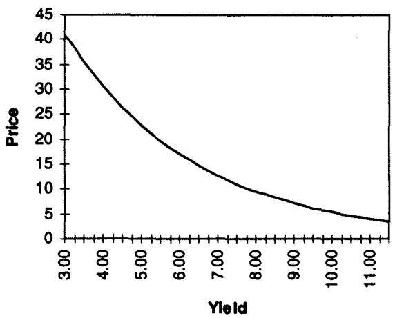
图 10.4 的 convexity 是收益率变化引起的支付非线性变化，本例用 30 年到期、无票息把它放大了。注意公式里 这一项：convexity 随久期平方增长，所以长期低息债凸性最大，这是后面 modified convexity 要警惕的地方。
期权对标的的 convexity 与 vega convexity
期权对标的的 convexity 是 gamma 。vega convexity（即 volga / vomma）是 。
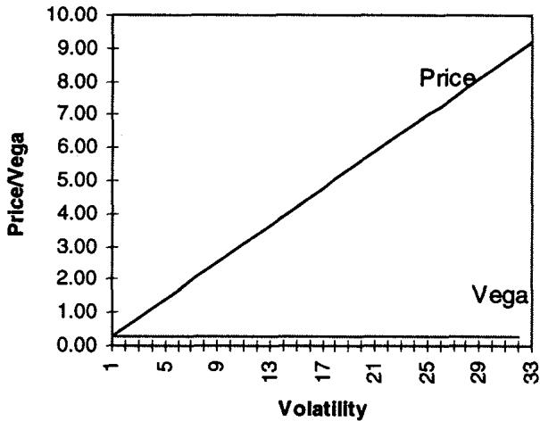
表 10.4 是一个恰好平值（按远期）的欧式 call 的例子，它的 value 随波动率线性增长、vega 恒为 0.28（图 10.5）。这印证了第九章那条规则：平值期权的 vega 对波动率稳定（ at ATM）。
| 波动率 | Value | Vega |
|---|---|---|
| 1 | 0.28 | 0.28 |
| 5 | 1.40 | 0.28 |
| 10 | 2.80 | 0.28 |
| 15 | 4.20 | 0.28 |
| 20 | 5.60 | 0.28 |
表 10.4（节选）：平值 call 的 value 与波动率成正比，vega 恒定。
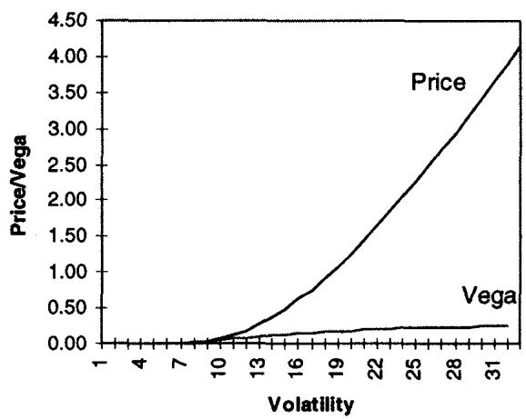
表 10.5（180 天、15% 虚值 call，或 15% 实值 put）则显示偏离平值的期权 vega 随波动率上升而上升（凸性，图 10.6）：
| 波动率 | Value | Vega |
|---|---|---|
| 10 | 0.07 | 0.05 |
| 15 | 0.49 | 0.13 |
| 20 | 1.26 | 0.19 |
| 25 | 2.27 | 0.22 |
| 30 | 3.42 | 0.24 |
表 10.5（节选）：虚值 call 的 vega 从 0.05 爬到 0.24，这就是两翼的 volga 凸性，long wings = long vega convexity。第 15 章讨论 vega convexity 对期权定价的影响。
波动率过度上升时，所有期权对波动率都变凹，因为每个期权的价格都被标的资产价格封顶。资产值 100，期权价格不能超过 100，否则理性交易员会直接买资产而非 call。换个角度看，极高波动率下，资产成了写在自己身上的 call（可以无限上涨、只能有限下跌），于是资产价格与 call 价格趋于收敛。
Middlebrow convexity vs Modified convexity
middlebrow convexity 度量一个结构对某参数的敏感度。它用于比较是错的，因为 2 年债（对收益率）的 convexity 几乎无法与 10 年债比较，两个利率的波动率不同。modified convexity 试图通过按相对波动率重新缩放来纠正。
这又是第九、十章反复的 modified 思想，落到 convexity 上。例（单因子模型修正 convexity，1993.5-1995.5 数据）：
| 到期 | 2y | 5y | 10y | 30y |
|---|---|---|---|---|
| 敏感度 | 1.231 | 1.145 | 1 | 0.839 |
敏感度是收益率曲线（以收益率表示）相对 10 年期国债的相对敏感度。单因子模型选一个工具作"支柱"、假设与其他工具 100% 相关。用多项式插值可构造近似函数（表 10.6）：
| 到期 | 因子 | Convexity | Modified Convexity |
|---|---|---|---|
| 2 | 1.23 | 0.04 | 0.05 |
| 5 | 1.13 | 0.22 | 0.25 |
| 10 | 1 | 0.69 | 0.69 |
| 20 | 0.85 | 1.87 | 1.59 |
| 30 | 0.84 | 2.98 | 2.50 |
这里有一个 Taleb 反复强调的反直觉点：**最高 convexity 的工具往往落在收益率曲线最不波动的点上。**很多债券交易员发现，凸性最高的长期低息债，恰恰位于曲线上波动最小的位置，于是它们凸性的好处比预期小。不用类似波动率权重的因子去比较 5 年和 30 年债的 convexity 是错的。同理用于期权：最高 convexity 常见于隐含波动率最稳定的后月虚值期权。中庸文献在 1980 年代和 90 年代初大量繁殖 convexity 信息，假设平行移动的数字一般没用，用交易员的直觉比计算误导公众的指标更有帮助。值得注意的是，这些方法忽视了 Vasicek (1977)、Cox-Ingersoll-Ross (1985a) 等人开创的、度量曲线形状变化的学术进展。中庸基金经理实施的很多基于 convexity 的对冲，因此建立在错误假设上。
Eurodollar 是凸的：boost 与 double bubble
最后 Taleb 用 Eurodollar 把第一章"期货-远期凸性来自融资相关性"的规则兑现成现金流表。boost 是做空 Eurodollar 期货的隐含 convexity：你能以更高利率再投资利润、以更低利率为损失融资。
Eurodollar 期货属于每日盯市类：盈利日收到变动保证金、亏损日付出。融资成本和盈利性之间有联系：市场下跌时空头 Eurodollar 赚钱，钱被电汇给投资者、可以高利率投资（因为 Eurodollar 跌了利率高）；市场上涨时交易员亏钱，但这些损失能以更低利率融资。
假设短 400 张 CME Eurodollar 合约（1 年到期），收益率曲线平坦且平行移动（融资与盈利性 100% 相关）。表 10.7（节选）：
| 期货 | 利率 | 利润 | 再投资 | 合计 |
|---|---|---|---|---|
| 90 | 0.10 | 4,000,000 | 400,000 | 4,400,000 |
| 93 | 0.07 | 1,000,000 | 70,000 | 1,070,000 |
| 94 | 0.06 | — | — | — |
| 95 | 0.05 | (1,000,000) | (50,000) | (1,050,000) |
| 98 | 0.02 | (4,000,000) | (80,000) | (4,080,000) |
当 Eurodollar 到 9300，交易员能以 7% 再投资正变动保证金，到期前赚 70,000；到 9500 时亏损只以 5% 融资，付 50,000。这 20,000 的差额代表一个微小的凸性差，但需要被计入。boost 在后月变得显著（5 年 Eurodollar 的利润会再投资 5 年），所以 boost 随到期拉长而增大；利率高时 boost 加速（再投资率更高）。
做空 Eurodollar strip 呈正 convexity，这本身不稀奇，稀奇的是做空 Eurodollar strip 是 long 零息债的绝佳对冲。零息债也是凸的，于是这笔交易提供双重凸性，某位著名套利者称之为"double bubble"。
理论映射：boost 就是 futures-forward convexity adjustment
这张表是第一章那条风险管理规则的数值证明。**期货价与融资利率的相关性制造凸性。**做空 Eurodollar 期货，当利率上升（期货价下跌）时盈利、且恰好能以上升后的高利率再投资；利率下降时亏损、且能以下降后的低利率融资。现金流时点系统性地有利于空头，这就是正 convexity。用我们的语言，这是 产生的二阶项，正是利率衍生品里著名的 futures-forward convexity adjustment（Eurodollar 期货相对 FRA 的凸性修正）。它随到期平方增长（后月 boost 更大）、随利率水平上升（再投资率更高）。double bubble 则是把两个独立来源的凸性（短 Eurodollar strip 的 boost + 零息债对收益率的凸性）叠在一起。Taleb 借此再次点题：制度细节（每日盯市、再投资时点、融资相关性）能让一个名义上线性的工具产生 convexity，这是全书"准线性工具在压力下暴露非线性"主题的又一例。
九、本章综述：理论与实务的对照
| Taleb 的实务命题 | 对应的理论命题 |
|---|---|
| 时间衰减不是期权的期望盈亏 | 正确波动率、零利率下 ，theta 是 gamma 收益的镜像 |
| theta 是租金，与 gamma 同进退 | （BSM PDE，零利率） |
| 卖短期权不比卖长期权多收租 | alpha ，与到期无关 |
| theta 不含权利金成本（本书约定） | 自融资策略下 carry 中性，净化出纯时间价值 |
| modified theta 计入曲线下滑 | 均值回复 + 插值 |
| shadow theta：市场不动则波动率掉 | |
| theta 看不见 whipsaw | theta 路径无关，short gamma 在往返路径上双向受损 |
| rho 假设平行移动，要拆分加权 | 收益率曲线主成分 level-slope，modified rho 近似 level+slope |
| 插值要消除锯齿、适应市场 | cubic spline 平滑；定价随市、判断独立 |
| omega = 名义久期 × Rho2 比 | 最优停时的有效久期，用利率敏感度反推 |
| 美式 = 写在利率上的复合期权 | 提前行权缩短有效久期，Rho fudge 读出缩短比 |
| alpha 把租金翻译成盈亏平衡波动率 | 公平 alpha ，偏离则大数定律下必亏 |
| gamma∝1/σ、theta∝σ | ATM 处 、 |
| 平值 vega 线性、两翼 vega 凸 | volga 在 ATM 为 0、两翼为正 |
| 高波动率下期权对波动率变凹 | 期权价被标的封顶，资产成为写在自己身上的 call |
| 最高凸性常在最不波动的点 | 长期低息债 convexity∝久期²，但落在曲线低波动段 |
| Eurodollar boost、double bubble | futures-forward convexity adjustment， |
核心观点
第一，theta 是 gamma 的镜像，不是期望盈亏。 把两者锁死，按正确波动率定价时 theta 的期望为零。真正衡量 gamma 质量的是 alpha。
第二，卖短期权不会多收租。alpha 与到期无关，短期权 theta 大、gamma 也大，单位 gamma 的租金一样。这是本章戳破的最大新手幻觉。
第三，所有裸希腊字母都假设别的参数冻结。shadow theta、modified rho、modified convexity 做的是同一件事：把被冻结参数的联动（波动率随时间掉、曲线非平行移动、各参数波动率不等）用一个交叉项或相对权重补回去。
第四，"次要"风险会翻成主要。rho 在高利率波动的市场、convexity 在长久期工具、omega 在陡峭期限结构下都不再次要。没有放之四海皆准的主次划分。
第五，制度细节制造凸性。Eurodollar 的 boost 说明每日盯市和融资相关性能让线性工具变凸，这是全书"准线性在压力下现形"主题的延续。
面对一个时间/利率敏感度的操作清单
- 这个 theta 含权利金融资成本吗？按本书约定该剔除，我口径对了吗？
- 市场若保持冻结，波动率会掉吗？要不要把 theta 升级成 shadow theta？
- 用 反推，我的 theta 和 gamma 自洽吗？alpha 高于还是低于公平值？
- 我在卖短期权图"收租快"吗？alpha 与到期无关，这个直觉错在哪？
- 头寸的 alpha 对应多大的盈亏平衡波动率？实际波动率会高于还是低于它？
- 我的 rho 是 raw 还是 modified？短端权重加上了吗？这市场利率波动会让 rho 从次要翻主要吗？
- 这是美式或路径依赖期权吗？用 Rho fudge 估的 omega 是多少？提前行权测试用对参数了吗？
- 这个 convexity 挂钩的参数波动率是多少？最高凸性是不是恰好落在最不波动的点？
- 是每日盯市的期货吗？融资与价格相关吗？需要算 boost / 凸性修正吗？
- theta 看不见 whipsaw，我的 short gamma 头寸在往返路径上会被咬几口？
一句话收束
本章最该记住的一句：**theta 是 gamma 的影子，不是期权的命运。**按正确波动率定价时它的期望为零，真正决定你死活的是 alpha（单位 gamma 收多少租），而 alpha 与到期无关、只由 决定。至于 rho、omega、convexity 这些"次要"希腊字母，它们只是平时次要，一旦利率剧烈波动、曲线陡峭、或制度细节制造出凸性，它们随时会翻成让你出局的主要风险。